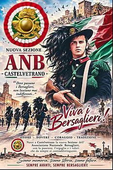
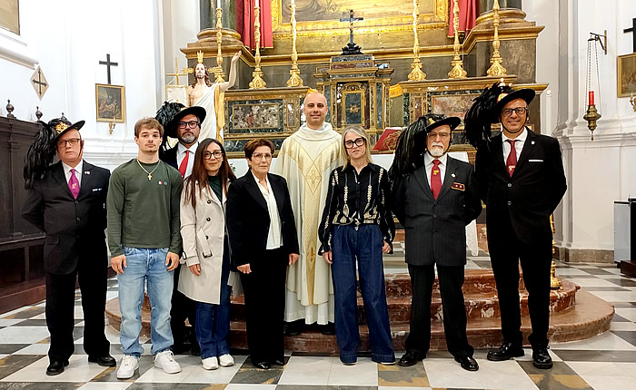
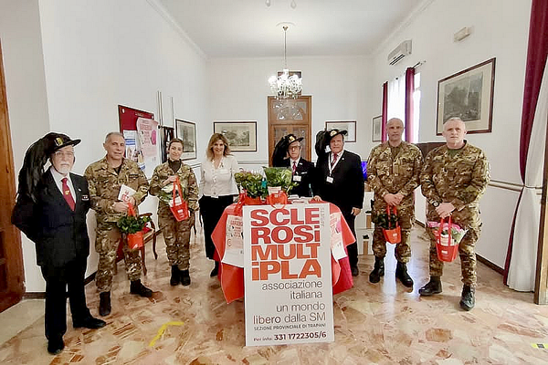

Benvenuti
Questo portale nasce per custodire la memoria dei Bersaglieri, raccontare le attività della nostra Sezione e condividere gli eventi, le tradizioni e i valori che da sempre contraddistinguono il Corpo dei Bersaglieri.
ULTIME NOTIZIE
Le ultime attività e gli avvenimenti della Sezione Bersaglieri di Paceco.
4 NOVEMBRE – GIORNATA DELL'UNITÀ NAZIONALE E DELLE FORZE ARMATE
4 novembre 2026
La collaborazione tra le Sezioni di Trapani e Paceco ha rappresentato un significativo esempio di unità associativa, confermando come lo spirito bersaglieresco continui a essere un punto di riferimento per mantenere vive le tradizioni, custodire la memoria storica e trasmettere alle nuove generazioni i valori che contraddistinguono il nostro Corpo.
UNA GRANDE EMOZIONE
1 settembre 2026

Cari amici, oggi abbiamo il piacere di condividere una bellissima notizia: la costituzione della nuova Sezione ANB – Associazione Nazionale Bersaglieri di Castelvetrano.
Un nuovo importante capitolo per la famiglia dei Bersaglieri, all'insegna della tradizione, della musica e dei nostri valori.
Marsala ricorda il C.le Mag Vincenzo Nizza
10 Maggio 2026

La Sezione Bersaglieri di Marsala ha reso omaggio alla memoria del Caporal Maggiore Scelto Vincenzo Nizza, nato a Marsala l’8 aprile 1981 e deceduto il 10 maggio 2011. Alla cerimonia erano presenti la mamma, la moglie e il figlio, testimoni di un ricordo vivo, profondo e carico di affetto. Alla cerimonia erano presenti la mamma, la moglie e il figlio, testimoni di un ricordo vivo, profondo e carico di affetto.
I Bersaglieri di Trapani e Paceco per sostenere la ricerca
9 marzo 2026

I Bersaglieri di Trapani e Paceco sono presenti nelle piazze di Trapani, Paceco, e presso il 6° Rgt. Bersaglieri accanto ad AISM per sostenere la ricerca contro la sclerosi multipla. La Gardensia AISM è un piccolo fiore che porta con sé un grande messaggio di speranza e sostenete questa importante iniziativa.